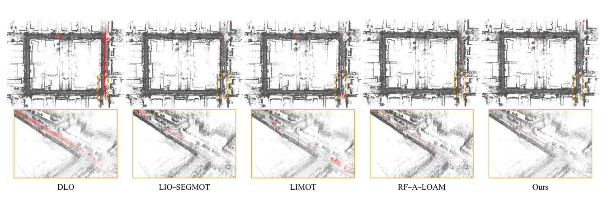
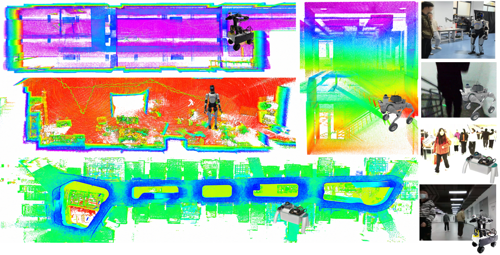
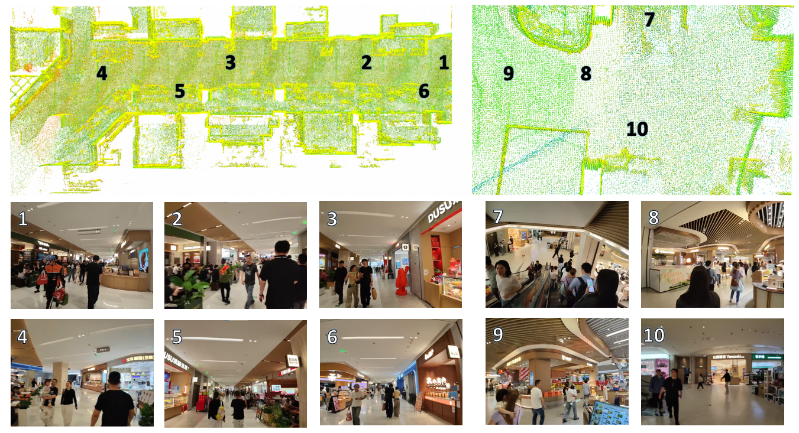
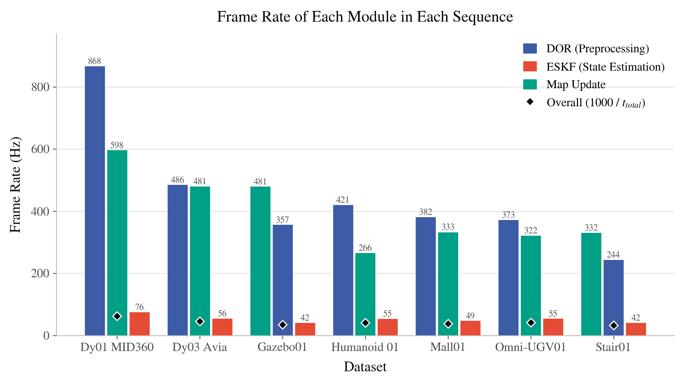
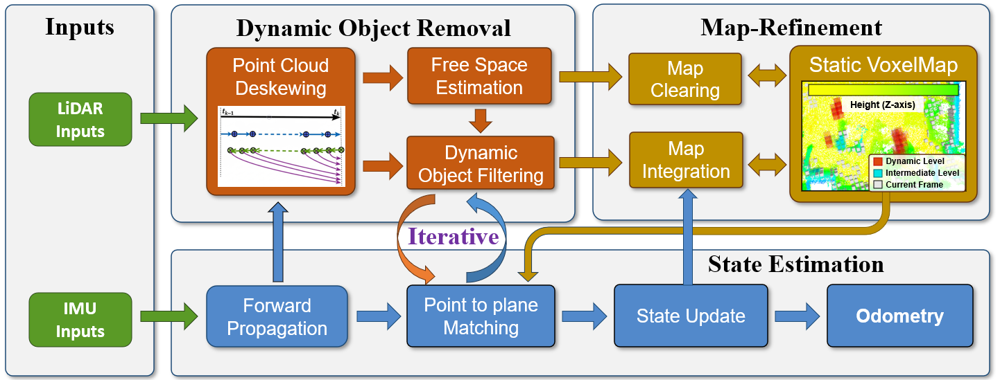
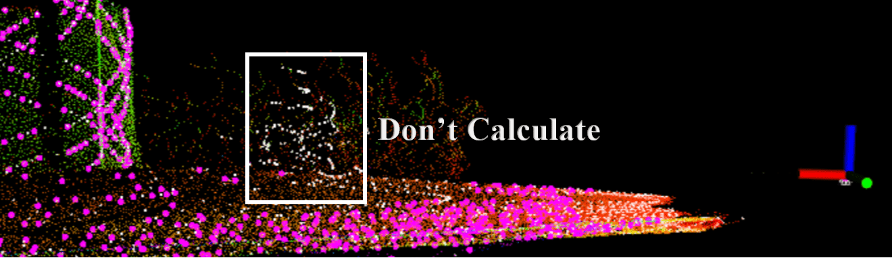
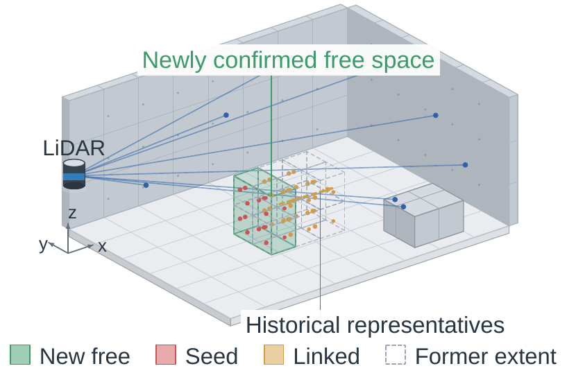

Dynamic reasoning and LiDAR–inertial estimation within one iterative pipeline.
01 / ESTIMATION
Iteratively Coupled Dynamic Removal
At each IESKF iteration, the current pose refreshes visibility-based classification,
static-point selection, and geometric correspondences. Only points classified as static
contribute to the LiDAR residuals.
02 / REPRESENTATION
Unified Multi-Resolution Map
One hierarchical voxel map supports nearest-neighbor search and conservative ray casting.
Three states — static, intermediate, and dynamic — connect visibility evidence to measurement selection.
03 / MAP UPDATE
Update Once, After Convergence
The persistent map stays read-only throughout the estimation loop. The converged posterior
then updates free-space evidence, clears contradicted map points, and integrates static structure.
Inside a Dynamic Scene
One journey, three synchronized perspectives. Follow the local map, camera view,
and global reconstruction — select a keyframe to jump to that moment.
LocalCamera
Global Full scene reconstruction
0:00 / 1:17
Autoplays silently when in view.
Interactive Point Cloud Explorer
A real static map reconstructed online by DOR-LIO.
Drag to orbit, scroll to zoom, right-drag to pan — the full map is
streamed to your browser.
Mall 01 · Point Cloud Comparison
Compare DOR-LIO with FAST-LIO2, BTSA, and FAST-LIO2 + DUFOMap.
Drag the divider to compare maps, drag elsewhere to orbit, and scroll to zoom.
DOR-LIO vs FAST-LIO2
Mall 01 / floor1 · Loading comparison…
Results on Public Datasets
Localization across eight public sequences and point-wise dynamic removal on four HeLiMOS sensors.
Benchmark Comparison
DOR-LIO (Ours)FAST-LIO2
0:00 / 0:14
Autoplays silently when in view.
Localization · Translation APE RMSE (m) ↓
Translation APE RMSE on public datasets
Sequence
A-LOAM
LIO-SAM
Dynamic-LIO
VoxelMap
FAST-LIO2
BTSA
TRLO
LIMOT
DOR-LIO
M1 · Dynamic01
0.171
0.140
0.140
0.625
0.143
0.142
0.981
3.468
0.138
M2 · Dynamic02
0.147
0.136
0.149
0.127
0.138
--
--
--
0.136
M3 · MountainTopPark01
--
--
--
--
--
0.79
0.80
--
0.64
M4 · MountainTopPark02
--
--
--
--
--
1.83
1.91
--
1.89
P1 · Promenade01
--
2.06
--
1.55
2.15
3.65
3.37
1.30
2.06
P2 · Promenade02
--
0.47
--
×
×
0.64
0.54
0.18
0.37
U1 · UrbanNav-HK-Data20190428
--
--
4.18
--
4.11
3.43
11.96
--
--
U2 · UrbanNav-HK-Data20200314
--
--
1.91
--
1.13
0.91
0.94
--
--
Lower is better. Bold marks the lowest available RMSE per sequence. -- = unavailable or inapplicable; × = trajectory divergence. BTSA and corresponding baseline results are quoted from the BTSA paper, as specified in the manuscript.
DOR-LIO reports 0.64 m on MountainTopPark01 and 0.37 m on Promenade02. Localization remains competitive across the reported sequences, with different methods leading on different scenes.
HeLiMOS · Qualitative Map Comparison. Click the figure to view at full resolution.
HeLiMOS · Point-wise Dynamic Removal (%) ↑
HeLiMOS point-wise removal with ground-truth poses
Sensor
Metric
BeautyMap
DUFOMap
ERASOR
Dynablox
BTSA
DOR-LIO
Aeva
SA
69.34
91.93
99.21
97.64
91.50
63.92
Aeva
DA
79.98
79.33
44.56
64.78
77.77
90.49
Aeva
HA
74.12
84.57
59.96
75.81
82.50
74.83
Avia
SA
79.77
96.30
99.35
95.21
93.66
71.56
Avia
DA
85.30
72.33
36.15
59.54
67.64
91.25
Avia
HA
81.51
80.43
50.60
69.42
75.87
79.98
Ouster
SA
92.24
90.06
99.54
97.02
95.46
62.64
Ouster
DA
86.72
90.23
54.36
71.68
72.07
96.16
Ouster
HA
89.27
89.99
69.56
82.09
81.80
75.83
Velodyne
SA
76.62
85.18
99.84
97.62
74.15
76.84
Velodyne
DA
84.73
13.12
7.90
31.87
48.93
87.27
Velodyne
HA
80.10
21.58
14.06
47.33
57.79
81.66
SA = static-point recall; DA = dynamic-point recall; HA = harmonic mean. All methods use ground-truth poses. Values are reported as supplied in the manuscript; HA is not recomputed from the displayed aggregate SA/DA. BeautyMap, DUFOMap, Dynablox, and BTSA are quoted from BTSA. The ERASOR source is not specified in the table note.
Bold marks the highest available value per row.
DOR-LIO reaches 96.16% dynamic recall on Ouster and 81.66% HA on Velodyne. Lower static preservation on Aeva and Ouster exposes a trade-off between dynamic rejection and retaining static geometry.
Dataset and sequence overview
Sequences listed in the manuscript dataset overview
ID
Sequence
Length
Duration
LiDAR
M1
Dynamic01
73m
175 s
MID360
M2
Dynamic02
--
150 s
Avia
M3
MountainTopPark01
--
289 s
MID360
M4
MountainTopPark02
--
270 s
MID360
P1
Promenade01
--
278 s
MID360
P2
Promenade02
--
195 s
MID360
U1
UrbanNav-HK-Data20190428
--
487 s
Ved
U2
UrbanNav-HK-Data20200314
--
300 s
ved
G1
Gazebo Seq. 01
--
--
Sim. LiDAR
G2
Gazebo Seq. 02
--
--
Sim. LiDAR
G3
Gazebo Seq. 03
--
--
Sim. LiDAR
Q1
Quadruped Seq. 01
--
--
MID360
O1
Omni-UGV Seq. 01
--
--
MID360
H1
Humanoid Seq. 01
--
--
MID360
S1
Shopping Mall Seq. 01
--
--
MID360
S2
Shopping Mall Seq. 02
--
--
ODIN
-- = not specified. Sensor names and sequence identifiers follow the manuscript.
Cross-Platform Comparison
Explore dynamic removal and mapping across four platforms.
Select a scene to watch the recorded comparison.
Recorded Gazebo experiment with moving objects: DOR-LIO, FAST-LIO2, and Dynamic-LIO.
Dynamic Gazebo Scene
Two additional speed settings will be added.
Gazebo · Dynamic Removal and Map Quality
Gazebo motion-speed comparison
Method
Gazebo Seq. 01 · Slow
Gazebo Seq. 02 · Medium
Gazebo Seq. 03 · Fast
DOR (%) ↑
Map Quality (m) ↓
DOR (%) ↑
Map Quality (m) ↓
DOR (%) ↑
Map Quality (m) ↓
PR ↑
RR ↑
F1 ↑
CD ↓
RMSE ↓
PR ↑
RR ↑
F1 ↑
CD ↓
RMSE ↓
PR ↑
RR ↑
F1 ↑
CD ↓
RMSE ↓
FAST-LIO2
×
×
×
0.291
0.516
×
×
×
0.312
0.523
×
×
×
0.297
0.509
FAST-LIO2 + Removert
66.799
80.143
72.865
0.586
0.690
58.952
78.978
67.511
0.572
0.659
58.722
80.137
67.778
0.581
0.668
FAST-LIO2 + FreeDOM
95.906
96.833
96.367
0.110
0.219
74.647
80.561
77.491
0.158
0.203
76.981
82.714
79.745
0.156
0.208
Dynamic-LIO
54.299
36.836
43.894
0.791
0.935
52.042
36.141
42.657
0.810
0.948
49.554
34.571
40.728
0.832
0.955
BTSA
--
--
--
0.649
0.870
--
--
--
0.172
0.369
--
--
--
--
--
DOR-LIO (Ours)
96.392
96.748
96.570
0.093
0.287
96.792
96.722
96.757
0.097
0.284
96.590
96.736
96.663
0.101
0.273
PR = voxel-wise static preservation; RR = voxel-wise dynamic rejection; F1 = their harmonic mean. CD = Chamfer distance. CD and map RMSE use the static ground-truth map. -- = unavailable. × is retained from the manuscript for FAST-LIO2 DOR cells; these cells do not report removal scores. Bold marks the best available value per column.
DOR-LIO records F1 values of 96.570%, 96.757%, and 96.663% across the tested speeds and the lowest CD in each setting. FAST-LIO2 + FreeDOM has the lowest map RMSE in all three settings.

Recorded qualitative evaluation in a dynamic Gazebo scene.
Results on Our Cross-Device Dataset
Real-world data collected with quadruped, omni-directional, humanoid, and handheld platforms, using Livox Mid-360 and Odin LiDARs.

Quadruped, omni-directional UGV, humanoid, and handheld deployments.
Self-Collected Sequences · Drift and Map Quality
Self-collected dataset evaluation
Method
Mall 01 Drift (m) ↓
Mall 01 MME ↓
Mall 02 Drift (m) ↓
Mall 02 MME ↓
School 01 Drift (m) ↓
School 01 MME ↓
FAST-LIO2
0.072
-3.078
0.029
-3.220
--
--
FAST-LIO2+FreeDOM
--
--
--
--
--
--
Dynamic-LIO
348.59
×
×
×
--
--
TRLO
10.579
0.652
6.416
1.395
--
--
BTSA
0.211
-1.476
0.018
-1.485
--
--
DOR-LIO
0.041
-3.438
0.004
-3.560
--
--
Drift = end-to-end translation error on a closed trajectory; MME = Mean Map Entropy. Lower is better for both. -- = unavailable; × marks failed / invalid results as supplied in the manuscript. School 01 results are not yet reported.

Mapping in a crowded shopping mall, with views of the central atrium and escalator area.
Processing Time
24.54ms
reported global mean per scan
16.00–30.80ms
reported processing-time range
2–5ms
DOR + map update
10Hz
reference LiDAR scan rate

Average per-scan processing time: preprocessing, state estimation, and DOR & map update. Intel Core i7-14700KF CPU; 16 GB RAM.
The figure reports average module timings. These summaries do not establish tail latency or end-to-end system throughput.
Method Overview

Fig. 2 — System architecture. The tightly-coupled pipeline consists of three
interconnected modules: (1) State Estimation fuses IMU and static map points via an IESKF;
(2) Dynamic Object Removal leverages the estimated pose to deskew scans and filter moving
objects through free-space estimation; (3) Map Refinement maintains and clears the static
voxel map. Dynamic classification is refreshed within the estimation loop; persistent map updates follow convergence.
FAST-LIO2 matches dynamic features (white box).

DOR-LIO selects only static points (purple).

Map clearing via incremental FreeSpace.
Citation
If you find this work useful, please cite:
@article{dorlio2026,
title = {DOR-LIO: A Robust and Tightly-Coupled LiDAR-Inertial Odometry
with Online Dynamic Object Removal},
author = {Anonymous Authors},
journal = {Anonymous Submission},
year = {2026}
}
Acknowledgements. We thank the authors of FAST-LIO2, FreeDOM, and the M3DGR
benchmark. The keyframe presentation is inspired by UrbanAgent. The video selector is inspired by TravExplorer. This project page design is inspired by
SE(2)-NavMesh and
Drive with Signs.